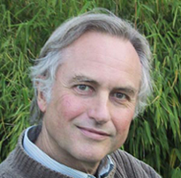

N 45, 2007 г.
Free Inquiry magazine V. 24, No 4, June / July 2004; V. 24, No 5, August / September 2004 http://www.secularhumanism.org/fi/index.htm )
| Бесполезность религии |
N 45, 2007 г. |
Richard Dawkins, What Use is Religion? Free Inquiry magazine V. 24, No 4, June / July 2004; V. 24, No 5, August / September 2004 http://www.secularhumanism.org/fi/index.htm ) |
| Автор рассматривает сообщество людей, как сообщество животных и, утверждая совершенно
верно, что нет людей без религиозного подсознания, делает абсолютно неверный вывод: этот
дефект возник у прародителей, верящих в нечто высшее и передавших это поколениям. Автор не дотягивает до марксистского понимания. Статья опубликована в журнале "Здравый смысл", который издавался лет семь, а потом тихо сошёл на нет. Почему? NP |
|  | Меня как дарвиниста интересует такой аспект религии как её безмерная расточительность, её
нелепая барочная бесполезность. Природа – скаредный бухгалтер. Она дрожит над каждым пенни и
наказывает за малейшие ненужные траты. Если в дикой природе животное тратит свои силы на
ненужные действия, естественный отбор будет отдавать предпочтение его соперникам, которые
посвящают все силы выживанию и воспроизводству. Природа не может позволить легковесную игру ума
для забавы. Безжалостный утилитаризм всегда козырь, даже если это и не видно на первый взгляд.
Антинг (anting) – необычная привычка соек «купаться» в муравейнике, побуждая муравьёв проникать в оперение птицы. Никто не знает в точности, какая польза сойке от такой привычки. Может быть, это что-то вроде личной гигиены, чистка оперения от паразитов. Тем не менее, по моему мнению, никакая неопределённость относительно предназначения этой привычки не может и не должна мешать дарвинисту полагать с большой долей уверенности, что эта привычка для чего-то нужна. |
| Религиозное поведение двуногих приматов требует затрат
огромного количества времени и сил. Средневековые кафедральные соборы построены ценой сотен
человеко-столетий. Церковная музыка и живопись монополизировали таланты средневековых людей.
Тысячи, а возможно и миллионы человеческих жизней загублены, часто после жестоких пыток, за
принадлежность к одной религии, а не к её едва отличимой альтернативе. Верующие гибли за своих
богов, убивали за них, голодали за них, были козлами отпущения, принимали обет безбрачия или
молчания, и всё это ради религии.
Хотя в разных культурах это происходит по-разному, нет ни одной, в которой не было бы того или иного варианта затратных по времени и средствам, побуждающих к враждебности и подавляющих способности к деторождению религиозных ритуалов. Всё это большая загадка для любого, кто мыслит, как дарвинист. Мы догадываемся, почему сойка имеет странную привычку купаться в муравейнике. Не ставит ли религия перед дарвинизмом подобную же трудную задачу, не требует ли её существование объяснения? Почему мы молимся и оплачиваем дорогостоящие службы ценой, во многих случаях, человеческих жизней? Но позвольте, при чём здесь дарвинизм? Религиозное поведение имеет отношение к дарвинизму, только если оно широко распространено, а не является редкой аномалией. Очевидно, однако, что оно действительно распространено, и проблема не исчезнет только потому, что разные культуры отличаются в деталях. Как и язык, это явление универсальное, хотя и проявляется по-разному в различных регионах. Не все люди религиозны, что могут подтвердить большинство читателей этого журнала (“Free Inquiry” – ред.). Но религия как элемент человеческой культуры универсальна. Повсюду в мире имеется тот или иной вид религии, которая даже неверующими признаётся такой же нормой для данного общества, как манера одеваться, ухаживать, питаться. Для чего же нужна религия? Существует мнение, что религиозная вера предохраняет людей от заболеваний, связанных со стрессом. Немалая часть того, что доктор может дать пациенту, – это утешение и успокоение. Мой врач вовсе не практикует наложение рук. Но множество раз меня почти мгновенно вылечивали от небольших заболеваний спокойный голос и интеллигентное лицо человека со стетоскопом. Эффект плацебо хорошо документирован. Доказано, что пустышки-пилюли вообще без всякого фармакологического действия могут приводить к улучшению самочувствия. Поэтому испытания лекарств проводятся с использованием плацебо для контроля. По той же причине гомеопатические лекарства иногда дают результат, даже если степень разведения такова, что они содержат такое же фармакологическое количество лекарства, что и контрольные плацебо, т. е. нуль молекул. Является ли религия лекарственным плацебо, продляющим жизнь путём уменьшения стресса? Может быть. Хотя скептики подвергают сомнению эту теорию, указывая, что во многих случаях религия только усиливает стресс, а не ослабляет его. Во всяком случае, мне кажется, что теория плацебо слишком слабый аргумент, чтобы оправдать всеобъемлющий и всепроникающий феномен религии. Я не думаю, что мы имеем религию потому, что наши религиозные предки выживали лучше благодаря снижению стресса с помощью религии. Я не думаю, что эта теория достаточно значительна для объяснения феномена религии. Другие теории вообще не дают дарвинистского объяснения феномену религии. Я имею в виду утверждения вроде: «Религия удовлетворяет наше любопытство относительно Вселенной и нашего места в ней». Или: «Религия утешает. Люди боятся смерти и обращаются к религии, которая обещает жизнь после смерти». Возможно, в этом есть какая-то психологическая правда, но это не дарвинистское объяснение. Как писал Стивен Пинкер в книге «Как работает мозг» (How the Mind Works. Penguin, 1997), «...возникает только вопрос, почему мозг эволюционировал к тому, чтобы находить удовольствие в верованиях, которые с очевидностью фальшивы. Когда человек замерзает, ему нет никакой пользы думать, что ему тепло; если человек видит перед собой льва, ему нисколько не будет лучше, если он будет верить, что это кролик». Дарвиновская версия теории страха смерти могла бы иметь следующую форму: «вера в воскрешение после смерти помогает оттянуть момент проверки её на истинность». Такая теория может быть или верной или неверной, может быть, это ещё один вариант версии стресса и плацебо. Но я не хочу дальше углубляться в этот вопрос. Я просто хочу сказать, как дарвинист должен был бы переформулировать его. Основанные на психологии утверждения относительно того, почему люди принимают или не принимают религиозную веру, объясняют непосредственные причины явления, но не дают фундаментального объяснения. Поиск непосредственных причин – задача психологии и нейроанатомии. В этой деятельности нет ничего плохого, она важна и вполне научна. Но будучи дарвинистом, я хочу копать глубже. Если нейроанатом находит центр веры в бога в мозгу, дарвинист хочет знать, как этот центр возник, почему те из наших предков, которые получили генетическую предрасположенность к росту центра веры в бога, выживают лучше, чем те, у которых такой предрасположенности нет? Исчерпывающий дарвиновский вопрос – не лучший, не более глубокий, не более научный вопрос, чем вопрос нейрологический, – но это то, о чём я собираюсь говорить здесь. Некоторые объяснения, претендующие на роль фундаментальных, дают теории группового отбора. Групповой отбор – это спорная теория о том, что естественный отбор происходит по отношению к группам особей так же, как в соответствии с нормальной дарвиновской теорией он происходит по отношению к отдельным особям в группах. Так, кембриджский антрополог Колин Ренфрю (Colin Renfrew), высказывает предположение, что христианство выжило в процессе групповой селекции благодаря тому, что оно проповедует идею групповой лояльности и братской любви. Подобные предположения делал американский эволюционист Давид Слоан Вильсон (David Sloan Wilson) в книге «Храм Дарвина» (Darwin's Cathedral). Приведём один искусственный пример, показывающий, как может работать теория групповой селекции. Племя, вдохновляющее своих членов воинственным «богом войны», выигрывает войны у племени, чей бог призывает к миру и гармонии, или племени, у которого нет бога вообще. (Боевики, которые верят, что мученическая смерть приведёт их прямо в рай, сражаются храбрее и добровольно жертвуют своими жизнями.) Поэтому в межплеменном отборе такое племя выживает лучше, завладевает скотом своих побеждённых соперников, захватывает их женщин в наложницы. Такие успешные племена порождают дочерние племена, которые в свою очередь дают новые дочерние племена, поклоняющиеся тому же племенному богу. Заметим, что это совсем не то, что выживание самой религии воинственности. Конечно, она выживает, но в данном случае речь о том, что выживает группа людей, носителей этой идеи. Теории группового отбора вызывают серьёзные возражения. Будучи признанным оппонентом этой теории, я поостерегусь садиться на этого конька и отвлекаться от предмета этой заметки. Математические модели показывают, что групповая селекция может работать только при некоторых весьма особых условиях. Возможно, религии в человеческих обществах функционируют как раз в таких особых условиях. Это небезынтересное направление для дальнейшего исследования, но я не буду здесь в него углубляться. Может быть религия оказалась явлением, возникшим уже после того как наши гены прошли большую часть пути естественного отбора? Повсеместная распространённость религии служит аргументом против слишком прямолинейного применения этой идеи. Тем не менее, один вариант такого объяснения я хочу обосновать. Склонность, естественно развившаяся в наших предках, не была сама по себе предрасположенностью к религии. Она давала совсем другие преимущества, и только по случайному совпадению она проявляет сейчас себя в религиозном поведении. Мы поймём религиозное поведение, только если переименуем его. Для меня как зоолога естественно использовать аналогию с животными. Явление «иерархии доминации» было впервые открыто в поведении кур. Каждая курица знает, какую курицу она может победить в драке, и какая победит её. В хорошо установившейся иерархии почти не наблюдается открытого соперничества. Куры в стабильных группах, у которых было достаточно времени для формирования «табели о рангах», откладывают больше яиц, чем в группах, где состав сообщества постоянно изменяется. Это позволяет предположить, что иерархия доминации даёт эволюционное преимущество. Но дарвинистские рассуждения здесь неприменимы, так как иерархия доминации – это групповое явление. Это фермеров может интересовать продуктивность групп, но, за исключением очень специальных условий, которые здесь не выполняются, естественный отбор действует на уровне индивидуума. Для дарвиниста вопрос, каково значение иерархии доминации для выживания, сформулирован неправильно. Правильно спросить: «Какое значение для выживания отдельных особей имеет способность уступить более сильным и способность наказать более слабых за нежелание уступить?». Дарвиновская постановка вопроса переносит внимание на тот уровень, на котором происходят генетические вариации. Отбору подвергается именно агрессивность или уступчивость отдельных особей, потому что именно они определяются или могут определяться генетически. Свойства группы, такие как иерархии доминации, сами по себе не определяются генетически, потому что группа не имеет генов. Или, по крайней мере, вы должны показать, в каком именно особом смысле можно считать, что свойства группы могут подвергаться генетическим вариациям (Or at least, you'll have your work cut out arguing some peculiar sense in which a group phenomenon could be subject to genetic variation). Я веду, конечно, к тому, что между религией и иерархией доминации может существовать аналогия. Вопрос, какова ценность религии для выживания, – это, по-видимому, неверно сформулированный вопрос. Правильно поставленный вопрос мог бы звучать так: «Какую ценность для выживания имеет некоторая ещё неизвестная нам поведенческая или психологическая характеристика индивидуума, проявляющая себя при определённых обстоятельствах как склонность к религии?» Так следует переформулировать вопрос прежде, чем мы сможем дать на него разумный ответ. Дарвинисты, которые хотят выяснить значение религии для выживания, заблуждаются. Мы должны сосредоточиться на поиске такой характеристики в наших эволюционировавших предках, которую мы изначально не сочли бы склонностью к религиозному поклонению, но которая послужила почвой к возникновению религии в изменившихся условиях цивилизованного общества. Я рассказал о феномене иерархии доминации у кур потому, что этот пример иллюстрирует центральную идею в моей аргументации. Поэтому я надеюсь, что вы простите мне ещё один пример из царства животных. Ночные бабочки летят обычно на пламя свечи, и это вовсе не случайно. Они не постоят ни за чем, только бы подвергнуться самосожжению. Мы могли бы назвать этот феномен «инстинктом самопожертвования» и пытаться понять, как дарвиновский естественный отбор мог способствовать его закреплению. Снова повторю, что нужно правильно переформулировать вопрос, прежде чем пытаться найти на него разумный ответ. Дело в том, что это совсем не самопожертвование или суицид. То, что кажется самосожжением, на самом деле просто нежелательный побочный эффект. Искусственное освещение – сравнительно недавние явление в естественной ночной среде обитания. До исторически недавнего времени единственными источниками света ночью были Луна и звёзды. Лучи от этих источников света, находящихся на оптической бесконечности, параллельны, что делает их идеальным компасом. Известно, что насекомые используют небесные объекты, чтобы держаться в полёте прямой линии. Нервная система насекомых настроилась так, чтобы управлять полётом по правилу: «Следуй таким курсом, чтобы лучи попадали в глаза под углом, скажем, 30°». Так как у насекомых зрение фасеточное, это означает, что определённый омматидий* должен получать максимум света. Но такой световой компас привязан к небесным источникам света, находящимся на оптической бесконечности. Если источник света, например, свеча, находится близко, его лучи не параллельны для глаза, а расходятся от источника. Нервная система бабочки, настроенная на поддержание постоянного угла между траекторией полёта и направлением на источник света, будет в этом случае направлять полёт по логарифмической спирали, которая сходится как раз к пламени свечи. Тем не менее, такой механизм навигации в большинстве случаев хорошо работает. Мы не замечаем сотен ночных бабочек, которые вполне успешно ориентируются по луне, звёздам и даже далёким огням городов. Мы видим только бабочку, летящую на нашу свечу и задаём неверный вопрос «Почему бабочки кончают самоубийством?». Вместо этого нам следовало бы спросить, почему у бабочек нервная система настроена так, чтобы поддерживать постоянный угол между направлением полёта и направлением на источник света? – настройка, которую мы замечаем только тогда, когда она приводит к неправильному результату. Если правильно поставить вопрос, кажущийся парадокс исчезает. Мы ошибались с самого начала, посчитав поведение бабочек самоубийственным. Применим полученный урок к религиозному поведению людей. Мы видим огромное количество людей – в некоторых районах до 100%, – которые продолжают верить в то, что с очевидностью противоречит научным фактам, не говоря уже о соперничающих религиях. Они не только придерживаются таких взглядов, но и расточительно тратят время и средства на дорогостоящую деятельность, вытекающую из этого. Они умирают за религию, они убивают ради неё. Мы поражаемся этому, как поражались феномену самосожжения ночных бабочек. Озадаченные, мы спрашиваем: «Почему?». И снова, говорю я, мы задаёмся неверным вопросом. Религиозная склонность, возможно, просто сбой, отрицательный побочный эффект какого-то психологического свойства, которое в других обстоятельствах было эволюционно полезным. Что это могло быть за свойство? Что в данном случае эквивалентно использованию параллельности лучей света от Луны как компаса? Я выскажу одно предположение, но должен подчеркнуть, что это только пример подхода, о котором я говорю, тем более, что я больше заинтересован в правильной постановке вопроса, чем в каком-либо конкретном ответе на него. Моя конкретная гипотеза касается детей. В гораздо большей степени, чем многие другие виды живых существ, мы выживаем благодаря аккумулированному опыту предыдущих поколений. Теоретически дети могут узнать на своём собственном опыте, что не стоит купаться в реке, кишащей крокодилами. Но, мягко выражаясь, эволюционное преимущество будет на стороне того детского мозга, который генетически склонен следовать золотому правилу «слушайся старших». Повинуйся родителям, повинуйся старейшинам племени, особенно когда они говорят серьёзным, назидательным тоном. Повинуйся без вопросов. Я никогда не забуду одну грозную проповедь в моей школьной часовне, когда я был ребёнком. Сейчас она кажется мне ужасающей, но в то время мой незрелый мозг воспринимал это так, как и задумал проповедник. Он рассказал историю о взводе солдат, проводившем учение около железнодорожных путей. В критический момент внимание сержанта, проводящего учение, что-то отвлекло, и он не дал приказ остановиться. Солдаты были настолько вышколены повиноваться приказам без лишних вопросов, что продолжали маршировать прямо на пути приближающегося поезда. Конечно, теперь я не верю этой истории, но в 9 лет я поверил в неё. Проповедник хотел, чтобы мы, дети, считали добродетелью рабское и беспрекословное повиновение солдат, каким бы оно абсурдным ни было. И я думаю, что мы действительно считали это добродетелью. А я, – думал я тогда, – хватило бы у меня храбрости так маршировать перед приближающимся поездом? Подобно этим идеально вышколенным солдатам, компьютеры тоже делают то, что им говорят. Они рабски выполняют все команды, если они написаны на воспринимаемом ими языке. Именно поэтому они делают множество полезных вещей вроде обработки текстов и разнообразных вычислений. Но, как неизбежный побочный продукт, они точно так же рабски выполняют вредные команды. Они не могут предсказать, будет ли команда иметь положительный или гибельный результат. Они просто повинуются. И именно это их беспрекословное повиновение делает компьютеры столь восприимчивыми к компьютерным вирусам и «троянским коням». Написанная злоумышленником программа, которая говорит: «разошли меня по всем адресам, имеющимся на твоём жёстком диске», будет беспрекословно выполнена, и затем она же будет выполнена другими компьютерами, которым она будет в результате копирования послана, и так она будет размножаться в геометрической прогрессии. Нельзя создать компьютер, который будет полезным рабом, в то же время не подверженным вирусной инфекции. Теперь, если я хорошо вас подготовил, вы уже и сами можете довести до конца рассуждение о связи восприимчивости детского мозга с религией. Естественный отбор выработал в детском мозгу тенденцию верить во всё, что бы родители или старейшины племени ни говорили. И именно это качество автоматически делает его восприимчивым к заражению мыслительными вирусами. По совершенно естественным эволюционным причинам, детский мозг должен доверять родителям и тем старшим, которым родители велят верить. Отсюда автоматически следует, что беспрекословно верящий не имеет возможности отличить хороший совет от плохого. Ребёнок не может определить, что правило «Если ты будешь плавать в реке, кишащей крокодилами, тебя съедят», – хорошее, а правило «Если в полнолуние ты не принесёшь в жертву козла, урожай погибнет», – плохое. Оба звучат одинаково. Оба исходят из надёжного источника, и оба произносятся строгим голосом, который требует уважения и повиновения. То же относится к высказываниям о мире, космосе, морали, природе человека. И, конечно, когда ребёнок вырастет и будет иметь своих детей, он, естественно, передаст всё это – так же авторитетно – своим детям. Эта модель предсказывает, что в разных географических регионах будут передаваться из поколения в поколение различные произвольные, не имеющие фактической базы верования, которых люди будут придерживаться с таким же убеждением, с каким они следуют полезным составляющим традиционной мудрости, например, к вере, что навоз полезен для урожая. Следует ожидать также, что беспочвенные верования будут эволюционировать из поколения в поколение либо вследствие случайного дрейфа, либо следуя закономерностям, подобным дарвиновскому естественному отбору, демонстрируя со временем значительное отклонение от общего предка. Человеческие языки расходятся от общего праязыка, если его носители географически разделены и проходит достаточно большой для этого промежуток времени. То же верно и по отношению к традиционным верованиям и предписаниям, передаваемым из поколения в поколение и возникшим первоначально благодаря программируемости мозга ребёнка. Дарвиновский естественный отбор формирует детский мозг с тенденцией верить старшим, со способностью к подражанию и, следовательно, косвенно со склонностью к распространению слухов, легенд, к религиозной вере. Но, создав такой мозг, генетический отбор порождает некоторый новый вид негенетической наследственности, на почве которой может возникать своего рода эпидемия и, возможно, даже новый тип негенетического дарвиновского естественного отбора. Я полагаю, что религия относится к группе явлений, объясняемых этим видом негенетической эпидемии с возможной примесью такого негенетического дарвиновского отбора. И если это так, религия не имеет никакой ценности для выживания человеческих особей и не даёт никаких преимуществ для их генов. Если и есть от неё какая-то польза, то только для неё самой**. |
| * Оптически чувствительная трубка, фасета, исходящая из центра глаза.
** Перевод с англ. Леонида Ярославского Ричард Докинс |